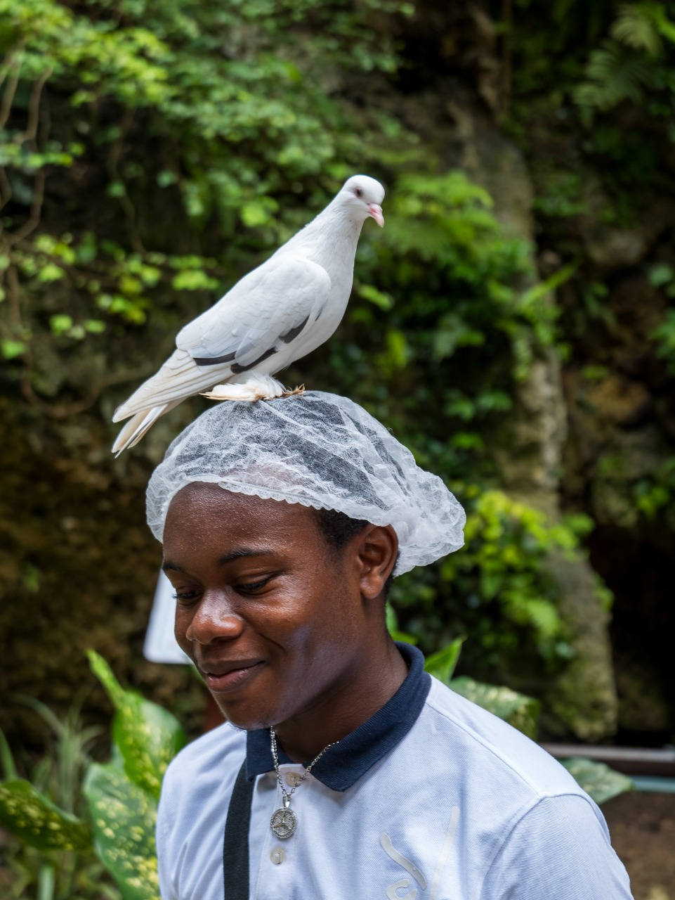

Welcome to my website
Hi, I'm Philon George, a second-year Computer Systems Technology student at T.A. Marryshow Community College in Grenada. Use the navigation bar to see my projects and how to contact me.

Home sweet Grenada

Web Design Student (Personal Website) - CST2
Hi, I'm Philon George, a second-year Computer Systems Technology student at T.A. Marryshow Community College in Grenada. Use the navigation bar to see my projects and how to contact me.
